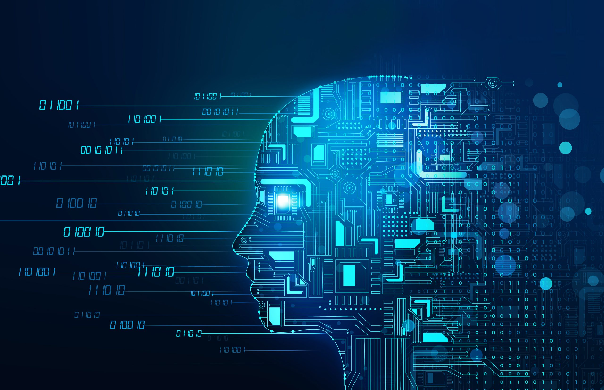

Psychological Weapon and Defensive Challenge
Kiara Catalano
Psychological Weapon and Defensive Challenge

Description
As new technologies arise, new cybersecurity challenges follow. The major technology trends right now are artificial intelligence (AI) and quantum computing, both of which pose a challenge to the Republic of Korea’s cyber landscape. AI is already being utilized by malicious actors to conduct more sophisticated phishing, vishing, SMS, and other social engineering attacks. As it continues to advance, it could be used to commit cyber espionage and crimes by leveraging deepfakes for identity theft, fraud, and election interference.
Deepfakes are audio, video, and photo spoofs made with AI. These can be used for identity theft by falsifying identity documents and using the victim’s voice over the phone to bypass verification measures. If a government official is a victim of this, the malicious actor may be able to change authorized users or approve major government plans. Identity fraud can cause misinformation and reputation damage, such as fueling unrest by mimicking the likeness and voice of a government official endorsing a controversial topic.
Quantum computing brings new defensive challenges as it can completely disrupt existing national encryption and security ecosystems. A cyberattack with a quantum computer could cause great damage to the Republic of Korea.
Plan
Before Action
- Identify the factors that pose a threat to national security due to new technology, including AI and quantum computing.
- To prepare for AI threats like deepfakes, limit the public online footprint of executive officials, monitor their likeness online, use watermarks on official images, and implement multi-step authentication methods.
- For quantum attacks, develop and implement quantum-resistant cryptography. Regularly test security measures and conduct simulations to ensure preparedness.
During Action
- For AI threats, stop the spread of deepfakes by contacting social media or news outlets, and counter misinformation by educating the public on falsities.
- For quantum threats, utilize quantum-safe protocols, determine the attack's source using analytics, and contain the threat to prevent further breaches.
- Maintain secure communication lines between government branches to coordinate responses effectively.
After Action
- Evaluate the reputational damage and public perception after an AI attack and develop PR strategies to mitigate harm.
- After a quantum attack, conduct a forensic assessment to determine how the intruder gained access, patch vulnerabilities, and create a detailed report on the attack.
- Share findings with allied governments, revise policies, and continue regular testing to prevent recurrence.